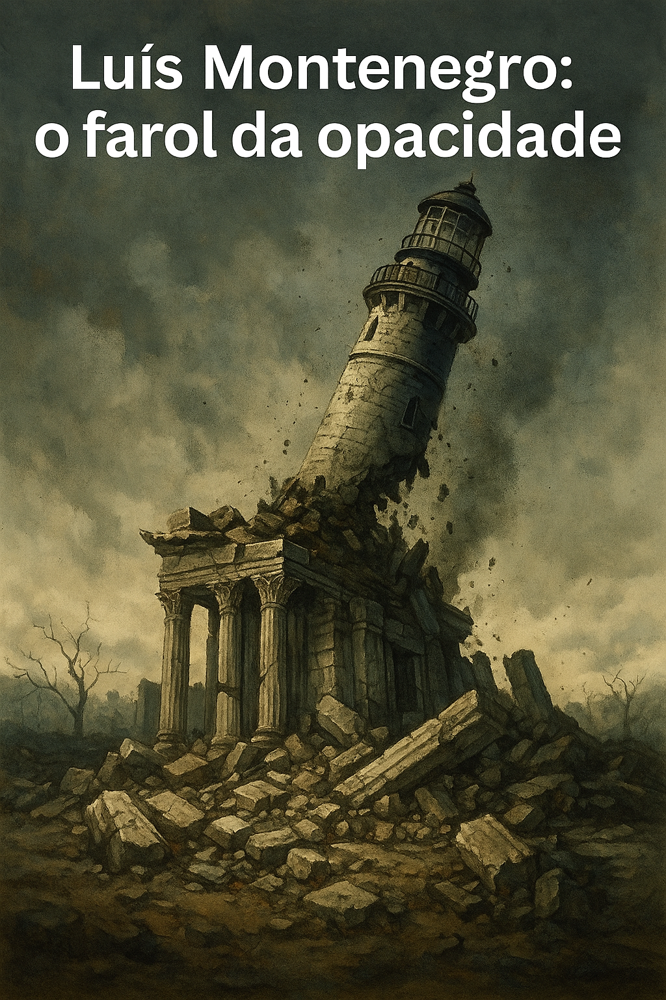

Publicado em 2025-05-12 21:13:57
Portugal vive uma das suas maiores crises de confiança política desde o fim da ditadura. E não, não é apenas pelo Chega. É pelo silêncio cúmplice do sistema partidário tradicional — um sistema que continua a reciclar protagonistas manchados, como se nada fosse.
Esta semana ficámos a saber, com números claros, que clientes da antiga empresa de consultoria ligada à família de Luís Montenegro faturaram mais de 100 milhões de euros com o Estado desde que este assumiu o cargo de primeiro-ministro. Cem milhões. Dinheiro público. Dinheiro nosso.
E o que diz o homem que se proclamou “farol de Portugal”?
Que não sabia. Que nada teve a ver. Que foi coincidência.
Coincidência? Ou influência invisível em pleno coração do poder?
Enquanto o país definha, enquanto a justiça hesita e os jovens fogem para o estrangeiro, os amigos do regime acumulam fortunas sob contratos públicos. Tudo legal, dizem.
Sim, como foi legal o BES. Como foi legal o BPN. Como são legais os tachos, os pareceres, os “ajustes diretos”.
A verdade é simples e crua: Luís Montenegro já não devia estar no poder. Devia estar a responder politicamente — e talvez mais do que isso.
Portugal não precisa de mais figuras recicladas, nem de moralistas com passado nebuloso. Precisa de responsabilidade, transparência e justiça real. Precisa que se diga: chega. Mas não ao Chega — chega a todos os que traíram a confiança do povo.
Hoje, Montenegro devia sair.
Amanhã, devemos ser nós a limpar a casa.
Por Augustus Veritas in Fragmentos de Caos